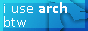
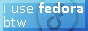
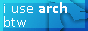
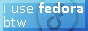
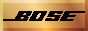
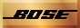

I'm a nerd. I was born in 2003 and grew up in Sweden where I still live today. Moved out and started working full-time within the AV-industry at the age of 18. I've been programming since I was 14.
I'm passionate about technology. I've always been fascinated by it, like when I realised that it's actually kind of crazy how video AND audio can be transported with an HDMI cable... when I was sixteen :')
I learnt about networking in school. The rest of my skills that are applicable in the field are mostly self-taught. I started really getting into Linux around the age of seventeen and I got to learn a whole lot about AV during my internship in school that lasted for 3 months or so.
Todo list:
- Extron button
- Coding lang buttons
- Ruby
- JS, TS
- PHP
- C#
- Lua
- Python
- HTML, CSS, Sass
- Bash
- OS buttons
- Pop!_OS
- Ubuntu
- Windows XP, Vista, 10, 11
- XCP-ng
- pfSense, OPNsense
- FreeBSD
- Rework Tutanota button to Tutamail?


 





 
